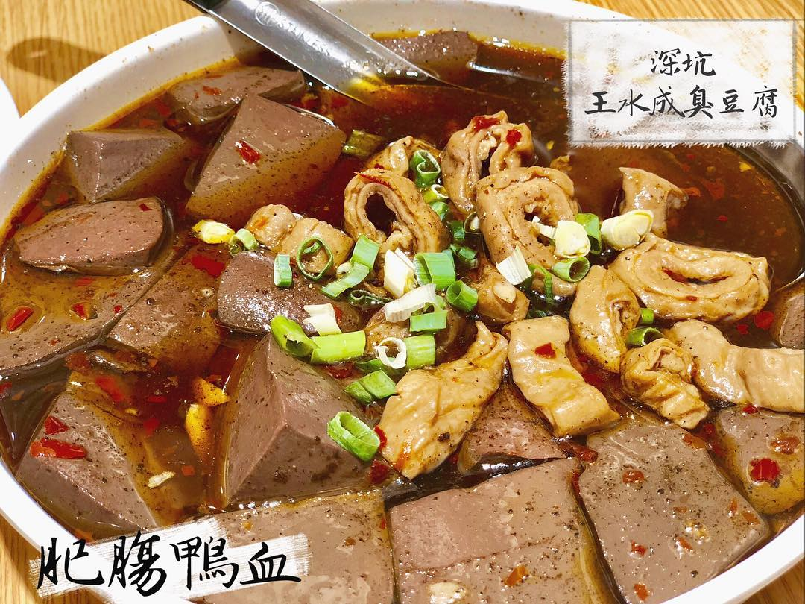

王水成老店
google評價：3.9★
店家資訊
地址：新北市深坑區深坑街118號
營業時間：早上10:30到晚上8:00，週三休息
店家電話：02-2662-9118

推薦菜單
麻辣臭豆腐60元 蒜香臭豆腐60元 紅燒板豆腐50元
白斬雞400元 肥腸鴨血220元 精燉牛楠350元
糖醋海魚650元/550元 炸手工豆腐100元/200元
豆腐羹120元/150元/200元 滷桂竹筍120元/180元/250元
酥炸花枝220元/350元 酥炸香菇180元/300元
顧客評論
位於深坑老街的門口，大部分推薦的有麻辣臭豆腐、紅燒板豆腐還有非常鴨血跟桂竹筍，蒜香臭豆腐吃起來軟嫩又入味，臭豆腐的味道並不強烈，有微微的香氣，豆腐裡面有滿滿麼氣孔，吸滿湯汁口感水嫩，肥腸鴨血也是店家的招牌之一，上面會灑胡椒粉提味，入口有淡淡的中藥香氣且多汁水嫩而且不會噁心，裡面的大腸頭也肥嫩多汁彈牙。